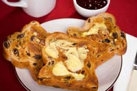

Bestselling author Barbara Kingsolver frequently writes about food, and in her essay Lily's Chickens she writes that she has become captivated by the alchemy of making butter and cheese. But while cheese is an art, Kingsolver writes, butter is a sport.
It's hard to disagree. Not only does making butter involve a certain amount of physical effort (unless you use a blender) but the whole process is pretty straightforward. In fact, because making butter is so simple, it makes a great project for kids ? or adults. It's a fast and easy process that lets you see for yourself where this basic and familiar food comes from.
The Basic Process
To make butter, first start with a simple ingredient, heavy cream. You can buy whipping cream at the grocery store, although if you live in a part of the country where you can get fresh cream from a dairy, so much the better.
Next, stir up the cream so that the butterfat globules begin to separate from the liquid. One of the simplest ways to do this is to get a canning jar with a sturdy lid and fill it about one-third full of cream. Then simply shake the jar until you feel and see the butter separate. When that happens, there's a sudden and noticeable difference in the consistency. That's the time to stop shaking.
Now separate the butter from the buttermilk by straining it. A colander or piece of cheesecloth may be helpful for this task. Rinse the butter with cold water, gently turning the butter with a spoon while the cold water runs over it until the water runs clear. Then mix in a little bit of salt, to taste ? or leave the butter unsalted if you prefer. Put the butter in the refrigerator. Let it chill, and then it's ready to eat!
Of course, you could forgo the canning jar and make butter in an old-fashioned butter churn, or in a mixer. Whichever tool you choose, the basic process is the same. The main difference is the amount of effort it takes to whip the cream into butter.
Other Approaches
Here are a few places on the Web where you can find more information about making butter, including helpful tips and fun photos:
The Scientific Breakdown. The Web site Cooking for Engineers has a fun and analytical approach to cooking. This article on making butter includes a breakdown of the basic health information, as well as complete photo documentation of how to make butter in a mixer.
The Homesteading Approach. This 1978 Mother Earth News article explains how and why to make butter with milk fresh from the farm.
Just for Kids. This page is designed for young people. It includes quotes from children about their own attempts to make butter, as well as links to other simple science projects.
Have you tried making butter at home? Share your own thoughts on homemade butter by posting a comment below.
|
 Istock/Linda & Colin McKie We all know and love real butter, but did you know this familiar food is easy to make at home? |
|
|